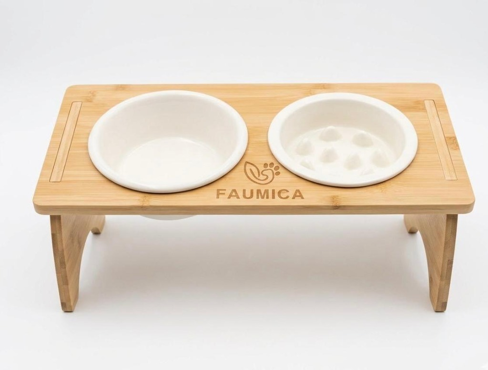
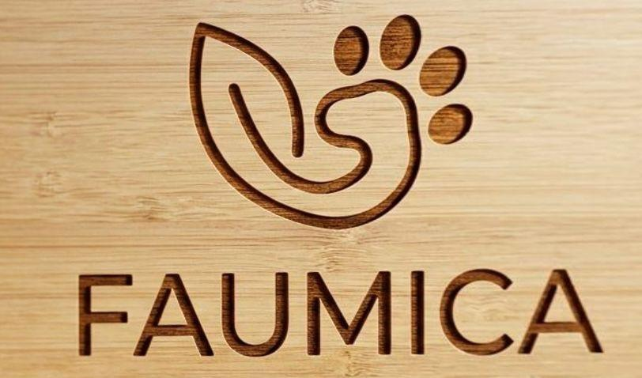
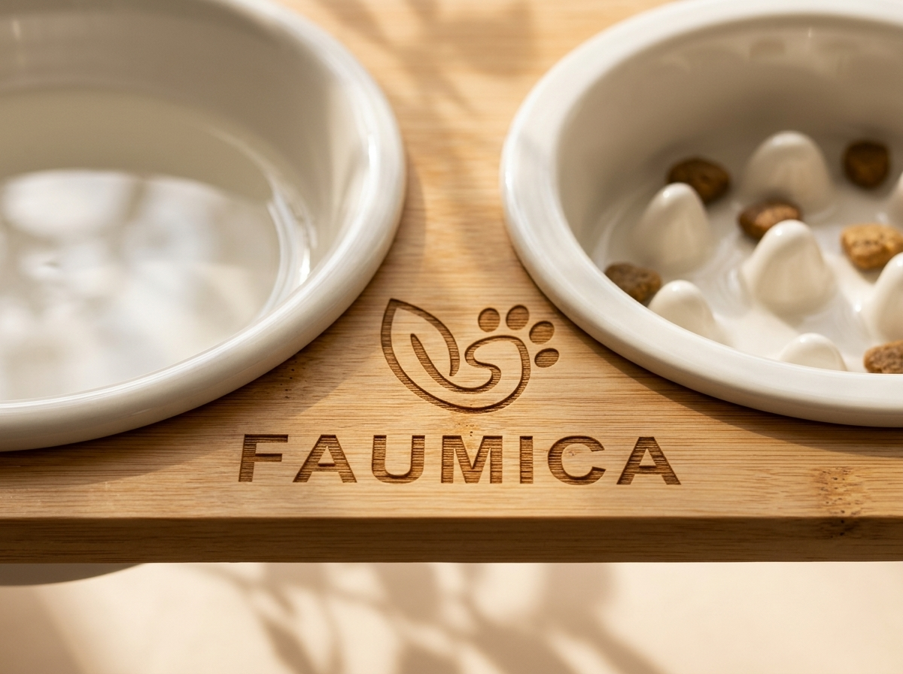
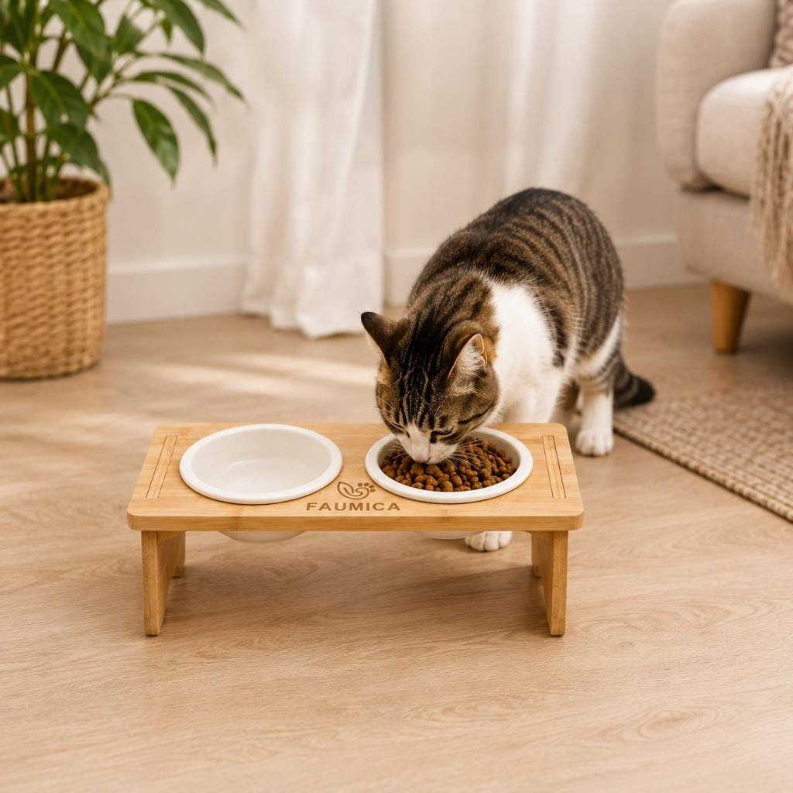
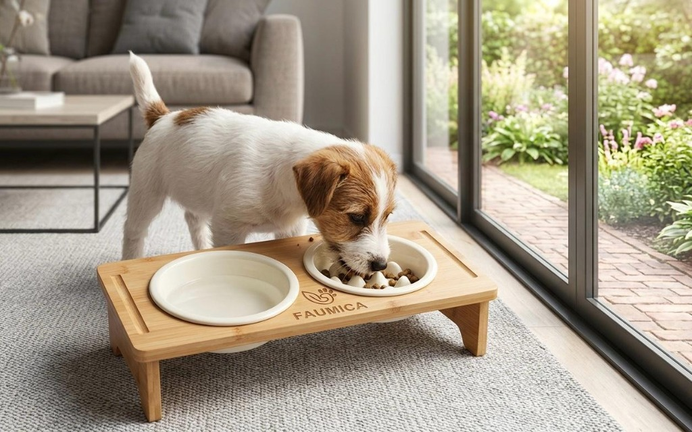

Ciotola Antisoffocamento Inclusa
Una delle due ciotole in ceramica presenta morbidi rilievi interni pensati per evitare l'ingozzamento rapido, prevenendo soffocamento, rigurgiti e gonfiore addominale.
Il set rialzato FAUMICA unisce un supporto in legno di bamboo protetto da vernice impermeabile, piedini smontabili con gommini antiscivolo perfetti anche in viaggio e due ciotole in ceramica lavabili in lavastoviglie — di cui una antisoffocamento.


Taglia Unica • Smontabile e facile da trasportare
Dal rivestimento protettivo impermeabile del legno di bamboo fino alla praticità dei piedini smontabili, ogni scelta rende FAUMICA resistente, igienico e versatile.
Una delle due ciotole in ceramica presenta morbidi rilievi interni pensati per evitare l'ingozzamento rapido, prevenendo soffocamento, rigurgiti e gonfiore addominale.
Il supporto in legno di bamboo è protetto da uno strato di vernice impermeabile trasparente che impedisce all'acqua e al cibo di penetrare e rovinare il legno nel tempo.
I fianchi si smontano con estrema semplicità riducendo al minimo l'ingombro: la soluzione perfetta per portare il set sempre con te in viaggio, in vacanza o fuori casa.
I gommini antiscivolo sotto i piedini tengono fermo il supporto su ogni pavimento, mentre entrambe le ciotole in ceramica si sfilano e si lavano comodamente in lavastoviglie.
Clicca sui punti numerati da 1 a 5 sulla foto originale per esplorare tutte le caratteristiche costruttive del set.
Un'unica misura versatile ed ergonomica che favorisce una postura naturale del collo durante il pasto e la bevuta, a casa come in viaggio.
L'altezza rialzata riduce la compressione sullo stomaco durante la deglutizione, mentre la ciotola antisoffocamento in ceramica evita i frequenti rigurgiti nei gatti più voraci.
Solleva comodamente acqua e pappa dal pavimento migliorando la postura cervicale, con gommini antiscivolo che impediscono al supporto di spostarsi mentre mangiano.
La combinazione tra supporto stabile in bamboo e ciotola antisoffocamento aiuta gli esemplari più golosi a rallentare il pasto, e grazie ai piedini smontabili li segue ovunque.
Ordina comodamente il set completo direttamente sullo store ufficiale su Amazon con consegna veloce e garantita.
Taglia Unica • Legno di Bamboo & 2 Ciotole in Ceramica
Acquista su Amazon
L'emblema foglia-zampa unisce l'amore per gli animali alla scelta di materiali naturali durevoli e facili da curare.
Ogni dettaglio del set FAUMICA è pensato per durare nel tempo, resistere all'uso quotidiano con acqua e cibo ed seguirti anche fuori casa senza ingombrare.
La superficie naturale del bamboo è protetta da una finitura impermeabile trasparente che evita aloni, rigonfiamenti e deterioramento causati dagli schizzi d'acqua, pulendosi in un attimo con un panno umido.
La ceramica smaltata è igienica, priva di plastica e pesante al punto giusto: sia la ciotola classica sia la ciotola antisoffocamento si estraggono facilmente per il lavaggio in lavastoviglie.
I piedini smontabili trasformano il supporto in un formato ultracompatto perfetto per il trasporto, mentre i gommini antiscivolo alla base garantiscono stabilità e silenzio su qualsiasi superficie.
Amato da gatti e cani di piccola e media taglia, si inserisce con eleganza naturale in ogni ambiente di casa.


★★★★★“La ciotola antisoffocamento in ceramica è fantastica: il mio cane prima divorava le crocchette in pochi secondi, ora mangia piano e i gommini antiscivolo non fanno muovere il supporto di un millimetro.”
★★★★★“Comodissimo il fatto che i piedini siano smontabili! Quando andiamo via per il weekend lo sfilo in due secondi e occupa pochissimo spazio in borsa. Ciotole subito pulite in lavastoviglie.”
★★★★★“Il legno di bamboo con lo strato impermeabile resta perfetto anche quando cadono gocce d'acqua vicino alla ciotola. Bello esteticamente e super funzionale.”
No: il supporto in legno di bamboo è rivestito da uno strato protettivo di vernice impermeabile pensato appositamente per proteggere il legno dall'acqua e dall'umidità quotidiana. Basta asciugarlo con un panno morbido per mantenerlo sempre come nuovo.
Assolutamente sì! I piedini sono smontabili tramite un pratico incastro: puoi smontarli in pochi istanti ottenendo una struttura piatta e salvaspazio, perfetta per il trasporto in borsa, zaino o bagagliaio.
Sì: sia la ciotola classica liscia sia la ciotola antisoffocamento sono realizzate in ceramica smaltata estraibile e possono essere lavate tranquillamente in lavastoviglie per la massima igiene quotidiana.
No, sotto i piedini sono applicati appositi gommini antiscivolo che mantengono il set stabile e silenzioso durante il pasto, proteggendo anche i pavimenti più delicati come il parquet.
Puoi ordinare il set direttamente su Amazon tramite il nostro link ufficiale. Se invece hai qualsiasi domanda o curiosità, seguici e scrivici direttamente un messaggio sulla nostra pagina Instagram @faumica.official!
Entra nella famiglia @faumica.official per scoprire nuovi contenuti, consigli dedicati al benessere di cani e gatti e vedere il set nelle case di chi lo ha già scelto. Hai domande o curiosità sul prodotto? Scrivici direttamente lì su Instagram: ti risponderemo con piacere!